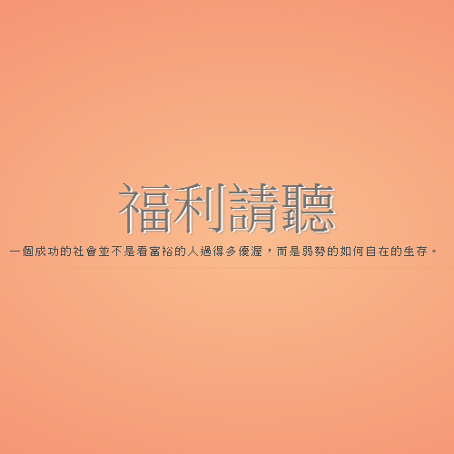
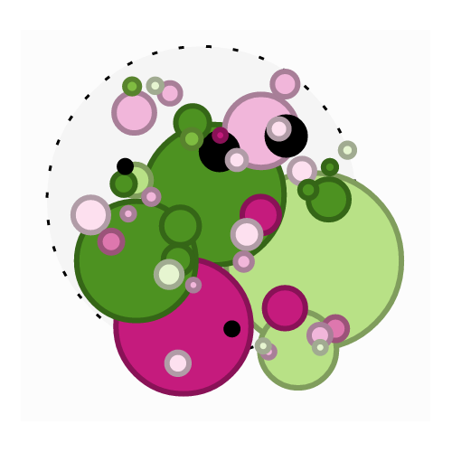
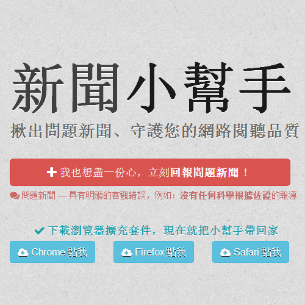

已有 9550 個人立志成為沒有人
in mockup stage -
Discussion Page
報告學長，沒有畫面，再強調一次，完全沒有畫面
經過{{elapsed_day}}天
五次黑客松
{{watchers}}人參與
{{prjs.length}}個專案
{{forks}}次分支
{{commits}}次送交
六次媒體報導
1049張照片
一群人
聚會一天
寫程式
作設計
爬資料
吃炸雞
分享成果
幫助人群
監督政府
零時政府的核心概念
G0V黑客松在幹嘛？
改造政府
去中心化
只靠少數人的力量，很難成就大事。去中心化讓每個人對自己的專案有極大的主控權，自行召集自己的專案成員、安排團隊的聚會及開發時程。
資料透明
將原本屬於人民的資料整理過後用更容易理解、通俗的方式呈現，並佐以互動式的內容，例如社群評論、內容補充修正等等，讓人民對資料更關注，進而更關心政府的所作所為。
開放源碼
為了讓被整理過的資料更有公信力，所有整理資料用的程式碼皆公開，任何人都可以驗證。更甚者，開放源碼提供了協作的管道，讓專案可以獲得更多人的貢獻。



臉書粉絲團人數成長趨勢 (一月至九月)
9k
聊天室同時線上人數 (一月至九月)
2k
發言數
天別
924
週一
1232
週二
1501
週三
1720
週四
1320
週五
877
週六
405
週日
我是分隔線
專案數
{{ prjs.length }}
總送交數
{{ commits }}
總分支數
{{ forks }}
待解問題
{{ issues }}
關注者
{{ watchers }}
專案列表
{{prj.name}}
貢獻者總數 {{ contributorCount }}
每位貢獻者平均參與的專案數 {{ prjsAllcontrib / contributorCount | number }}
貢獻者
{{ cont.name }}: {{ cont.total }}
{{ p }}
我是分隔線